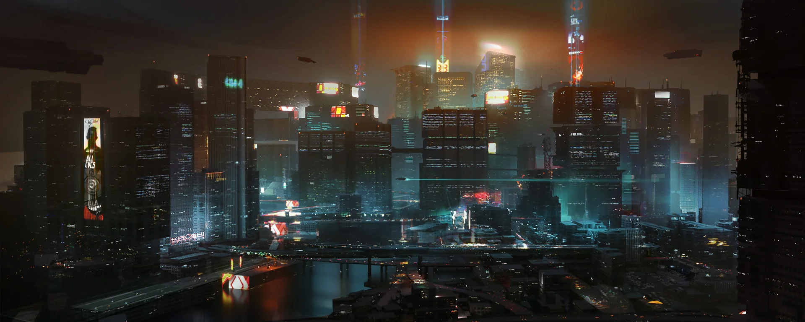
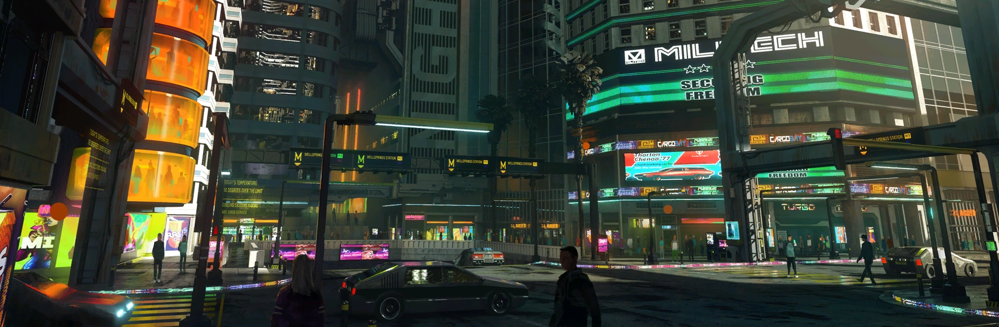
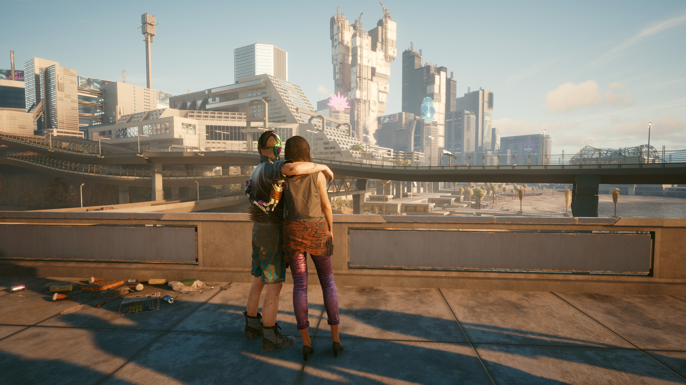

Deep dive into the World Of Cyberpunk
A megalopolis packed to the brim with things to do, places to see, and people to meet. And it’s up to you where to go, when to go, and how to get there. From the polished high rises of Corpo Plaza to the spacious outskirts of the Badlands, Night City is teeming with secrets to discover.
Cyberpunk, as a genre, includes a wide variety of visual aesthetics but is recognized by its encompassing theme of "high tech, low life". Cyberpunk narratives often incorporate a sense of hopelessness or nihilism, typically featuring a gritty and violent backdrop, with crime, artificial intelligence, class uprising, governmental and corporate corruption, anarchy, gang warfare, and transhumanism all being central themes. The art style emphasizes stark contrasts: glowing neon signs cutting through dark, rain-soaked streets, symbolizing both the allure and the peril of unchecked progress. It continues to captivate because it mirrors our own anxieties about the future, blending gritty realism with high-tech dreams.



Is it really the answer? How could anyone be happy in this type of world?
In a cyberpunk dystopian future, society teeters on the edge of collapse, dominated by sprawling megacorporations that control every aspect of life.oppressive governments use mass surveillance and artificial intelligence to maintain order, silencing dissent. In this dark world, hackers and rebels navigate the digital underworld, seeking freedom in a society where privacy and autonomy are relics of the past.